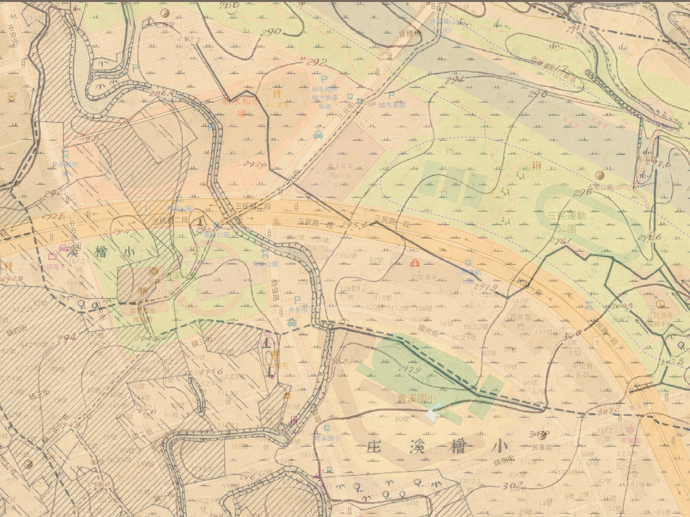
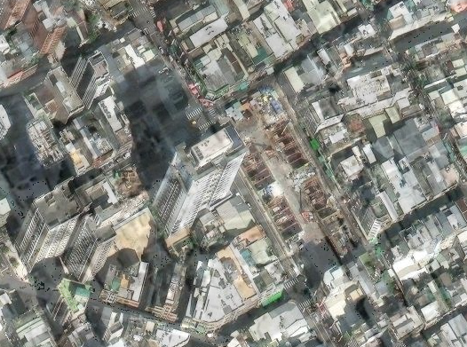

詭地圖．
EP.01 移位之地 // FORENSIC DESK
青溪的空白
現代桃園區三民路二段，青溪國小身旁座落著宏偉挑高的「新永和市場」。請向右拉動滑桿，退回 1920 年代：

[ 現代坐標：青溪國小 / 新永和市場 ]
三民路二段與日光路口 · 2021 啟用之安置市場建築
► 請向右拖動下方「年代穿透滑桿」退回 1920 年
鑑識發現：拉動滑桿退回 1920 年。現代的校舍、市場、重劃區道路在百年前完全蒸發，只有小檜溪的農田與水圳。
消失的舊址
調閱桃園市政府官方搬遷新聞稿。請點擊劃記下方 3 處關鍵字，查明新市場由來。
【市府公告摘要】為配合捷運綠線 G08 站工區興建工程，原位於中正路上之舊永和市場建築物必須拆除進行基地開挖。市府經發局選定小檜溪重劃區文中三用地興建新建築，以安置原永和市場全數攤商，並於民國 110 年 4 月搬遷營運，定名為「新永和市場」。
消失在工區下的街廓
利用穩定不變的百年中正路街道軸線，比對 1945 美軍空照與現代 G08 工區，點擊鎖定舊市場街廓。


請直接點擊上方空照圖中，大廟後方的舊市場工區街廓進行坐標鎖定。
消失的實體：舊永和市場記憶
這是一批舊永和市場在拆除前留下的生活照片。請點擊縮圖切換檢視：

FILE: 第三代永和市場.JPG · 1982 竣工之綜合商業大樓全貌
鑑識發現：第三代永和市場是一座地上鋼筋混凝土、地下具備商場與停車場的巨型複合建築。但當我們繼續往前檢索 1932 年以前的文獻時，卻發生了「名字斷層」……
時間軌道上的衝突
往日治時期追查時，市場前身為「桃園消費市場」。請點擊放入證物卡；遇矛盾說法時親手蓋上保留印章。
1931
1932
畫作不是 GPS
簡綽然 1939 年水彩畫《夜之素描》描繪了拱門、人群與夜燈。學者推測其為桃園消費市場，但能證明經緯度嗎？
[ASSET: ART-01 // 簡綽然《夜之素描》1939 國美館入選]
特徵：拱形門樓、夜市小販、吊燈與腳踏車剪影。
形式高度符合第一代市場外觀，但此為藝術創作與學術詮釋。
形式高度符合第一代市場外觀，但此為藝術創作與學術詮釋。
終極疊合：市場以前是什麼？
第一關看過的 1920 水利地形圖重新回到桌面！現在，我們將它與 1945 舊城核心空照完全疊合。
它真的蓋在池塘上嗎？
後世地方報導常稱：「1932在大廟後方填平埤塘興建消費市場」。根據你親手檢驗的所有證據，現在能證實這句話嗎？
她走錯了年代
[RECORDING: 異常通訊日誌 #2026-TW-084]
「我站在青溪國小門口的新市場前……但導航坐標一直把我往大廟西南邊拉。」
「那裡是一片被鐵皮圍住的地下連續壁，泥水翻滾，什麼也沒有。」
「城市很少突然消失。道路改了，地景變了。市場出現了，熱鬧了八十年，市場又搬走了。城市只是一層一層，把以前的自己蓋在下面。」
「她沒有走錯路。
她走錯了年代。」